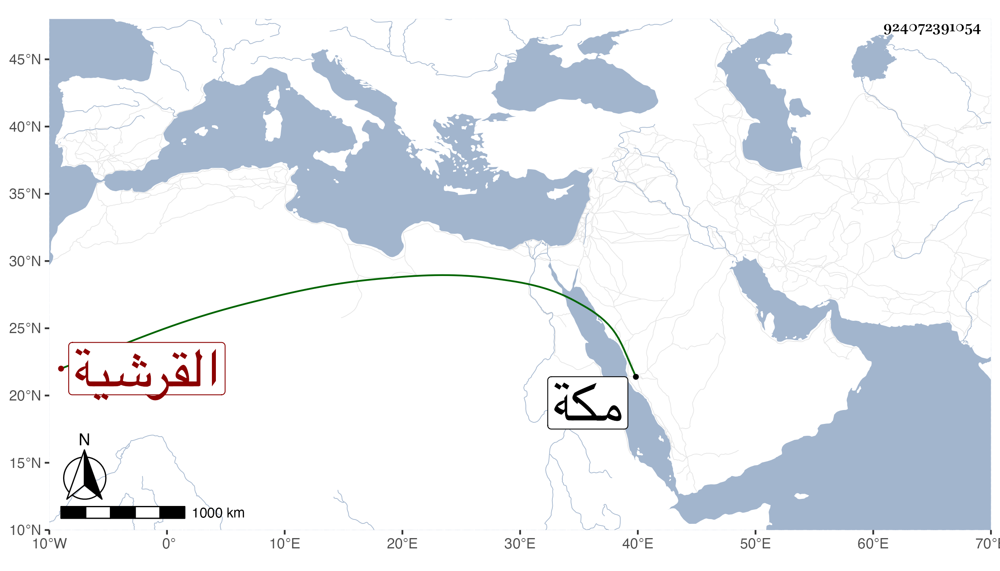

0902Sakhawi.DawLamic.ITO20230111-ara1.EIS1600.924072391054
Biography ID: 924072391054
925
أم كلثوم ابنة المحب أحمد بن أبي السعادات محمد بن أبي البركات محمد بن أبي السعود محمد بن حسين بن علي بن أحمد بن عطية بن ظهيرة القرشية شقيقة أبي اليمن محمد واخوته . ولدت في المحرم سنة ثلاث وخمسين وأمها زينب ابنة النجم المرجاني . وأحضرت على أبي الفتح المراغي ؛ وأجاز لها أبو جعفر بن العجمي وآخرون ، وتزوجها ابن عم ابيها أبو بكر بن أبي السعود وأولدها ست قريش ومات عنها ثم ماتت بعده بأقل من شهر في رجب سنة خمس وثمانين بمكة .
